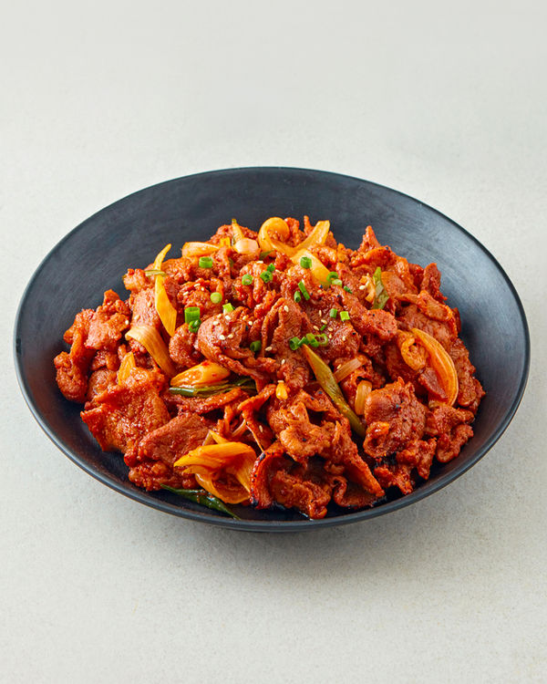

제육볶음

제육볶음: 매콤달콤한 맛으로 한국인의 입맛을 사로잡는 대표적인 볶음
요리
제육볶음은 얇게 썬 돼지고기를 고추장을 기본으로 한 양념에 버무려 볶아낸
한국인이 가장 좋아하는 볶음 요리 중 하나입니다. 매콤달콤한 맛과 부드러운
돼지고기의 조화가 일품이며, 밥과 함께 먹으면 더욱 맛있습니다.
제육볶음의 매력
매콤달콤한 맛: 고추장과 설탕의 조화로 만들어낸 매콤달콤한 맛은 누구나
좋아하는 맛입니다.
부드러운 식감: 얇게 썬 돼지고기는 부드러운
식감을 자랑하며, 밥과 함께 먹기에 좋습니다.
다양한 채소와의 조화: 양파, 파, 당근 등 다양한 채소와 함께 볶아내면 더욱
풍성한 맛을 즐길 수 있습니다.
간편한 조리: 재료만 준비하면 누구나 쉽게 볶아 먹을 수 있는 편리한
음식입니다.
제육볶음의 역사와 유래
제육볶음은 한국인의 오랜 식문화 속에서 자연스럽게 발전해 온 음식입니다.
돼지고기를 얇게 썰어 양념에 버무려 볶아 먹는 방식은 오래전부터 전해져
내려왔으며, 현대에 들어와 더욱 다양한 재료와 조리법으로 발전했습니다.